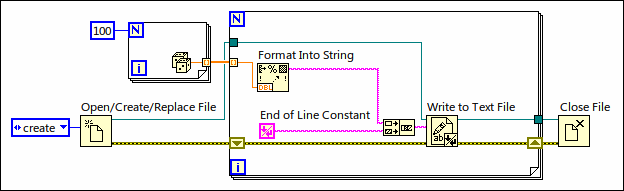
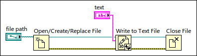
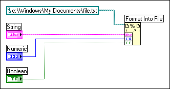

To write data to a text file, you must convert your data to a string.�Use the String functions to convert your data to a string. The following VI converts an array of randomly generated numbers to strings and writes the strings to a text file.

Writing text to text files requires no formatting because most word processing applications that read text do not require formatted text. To write a text string to a text file, use the Write to Text File function, which automatically opens and closes the file as the following VI demonstrates.

Use the Format Into File function to format string, numeric, path, and Boolean data as text and to write the formatted text to a file.
The following VI acquires multiple data types and writes them to a file.

Often you can use this function instead of separately formatting the string with the Format Into String function and writing the resulting string with the Write to Text File function.
Use the Scan From File function to scan text in a file for string, numeric, path, and Boolean values and then convert the text into a data type. Often you can use this function instead of reading data from a file with the Read from Binary File function or Read from Text File function and scanning the resulting string with the Scan From String function.